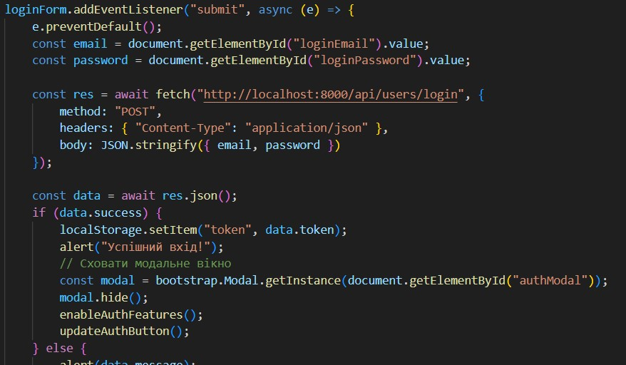

Тема, мета, місце розташування WEB-застосунка та місце звітного HTML-документу
Тема: АСИНХРОННІСТЬ. ПРОМІСИ. HTTP-ЗАПИТИ. REST API. AJAX. КРОС-ДОМЕННІ ЗАПИТИ. ПАГІНАЦІЯ. CRUD
Мета: Придбати практичні навички роботи створення промісу. Методи then(), catch(), finally().Ланцюжки промісів. Методи класу Promise. Протокол HTTP. Протокол HTTPS.. REST API Формат запиту. HTTP-методи. HTTP-заголовки. AJAX. Fetch API. Робота з публічним REST API
Асинхронні Функції
Асинхронні функції (async functions) дозволяють виконувати операції, які можуть займати певний час (наприклад, зчитування з бази даних або запити до сервера), без блокування основного потоку виконання коду. Вони створюються з використанням ключового слова async, а всередині такої функції можна використовувати оператор await, щоб «дочекатися» результату виконання асинхронної операції.
Проміси
Проміс (Promise) — це об'єкт, який представляє майбутній результат асинхронної операції. Проміси мають три стани:
- pending (очікування)
- fulfilled (виконано успішно)
- rejected (помилка)
API
API — це інтерфейс, який дозволяє різним програмам взаємодіяти між собою. У бекенд-розробці зазвичай йдеться про REST API — набір HTTP-ендпоінтів, за допомогою яких фронтенд може взаємодіяти з базою даних або логікою сервера. Приклади HTTP-методів API:
- GET /products — отримати список продуктів
- POST /order — створити нове замовлення
- PUT /product/:id — оновити товар
- DELETE /cart/:id — видалити з кошика
fetch() у фронтенді
fetch() — це вбудована функція в JavaScript, яка дозволяє відправляти HTTP-запити з браузера. Вона повертає проміс, тому її можна використовувати з .then() або всередині async/await. Приклад використання:
Таким чином, fetch є містком між фронтендом і бекендом: він надсилає дані з форми або кошика на сервер, а також отримує відповіді — наприклад, підтвердження замовлення або список товарів.